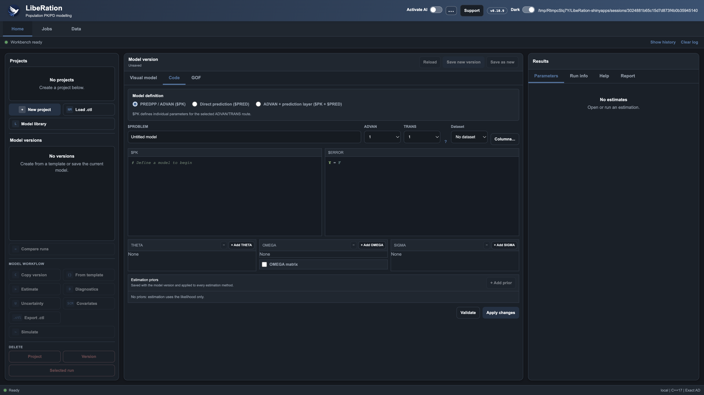
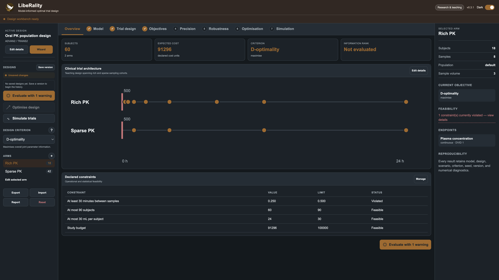
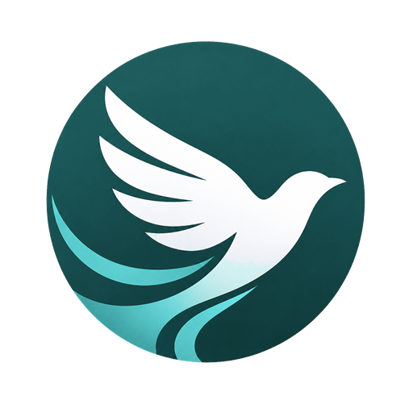
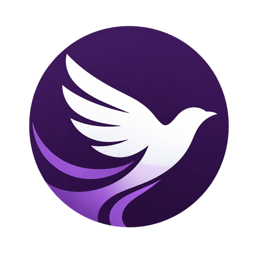
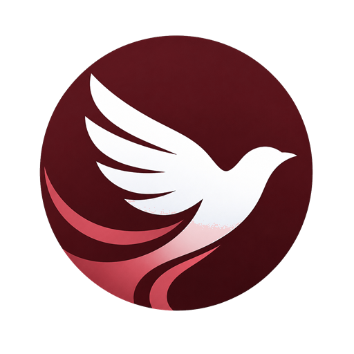

LibeR is a free, open-source ecosystem for pharmacological modelling and simulation — from literature discovery to individualised dosing, in one coherent workflow.
MIT licensed R interface, C++ engine Cross-validated against NONMEM, PopED & PFIM
The LibeRation workbench brings model editing, estimation, simulation, and diagnostics together — with light and dark themes and keyboard-friendly navigation.

LibeRation — population PK/PD modelling and simulation.

LibeRality — model-informed optimal clinical trial design.
Each package does one job well, shares the same design language, and connects seamlessly to the others.
Modelling & simulation
Build, estimate, and simulate population PK/PD models. FOCE, SAEM, Bayesian methods, diagnostics, VPCs, and NONMEM import/export — in a full visual workbench.
Learn moreOptimal design
Design better clinical trials with expected-information criteria, constrained optimisation, Pareto analysis, and complete trial simulation.
Learn more
Precision dosing
Bayesian individualisation of treatment from longitudinal patient evidence, with encrypted storage and uncertainty-aware regimen comparison. For research and teaching.
Learn moreModel discovery
Search the scientific literature and use language and vision models to extract, validate, and catalogue published pharmacometric models.
Learn more
Numerical core
The engine underneath: exact automatic differentiation via CppAD and Eigen, with fast C++ solvers powering every other package.
Learn more
Execution & queues
Durable local and remote job queues with authentication, tenant isolation, quotas, audit chains, and integrity checks for secure, scalable model runs.
Learn moreLibeRary finds and catalogues published models from the literature.
LibeRation estimates and simulates your population PK/PD models.
LibeRality optimises your next study or clinical trial design.
LibeRator turns models into individualised dosing recommendations.
Powered underneath by LibeRtAD (automatic differentiation) and LibeRties (secure job execution).
Hosted teaching deployments — synthetic data only. First load may take a few seconds while the server wakes up.
Requires R 4.1+ and a C++17 toolchain. CppAD and Eigen are bundled — nothing else to hunt down.
Full options, including stable-channel and manual installs, are in the install guide.